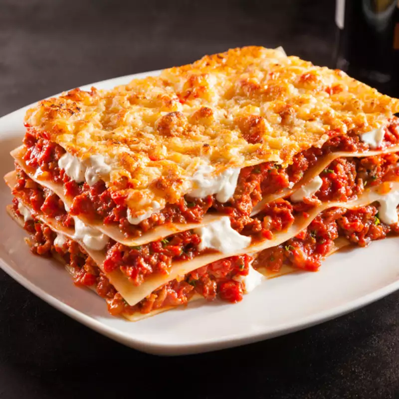

Lasagna Recipe

Description
Lasagna is a wide, flat sheet of pasta. Lasagna can refer to either the type of noodle or to the typical lasagna dish which is a dish made with several layers of lasagna sheets with sauce and other ingredients, such as meats and cheese, in between the lasagna noodles.
ingredients
- 1 pound lean ground beef
- 1 onion, chopped
- 1 green bell pepper, chopped
- 1 teaspoon Italian seasoning
- salt and pepper to taste
- ...
Steps
-
Brown meat with onions and bell peppers, and season to taste. Add tomato paste and water. Let simmer.
-
In a mixing bowl, mix ricotta cheese with beaten egg. Set aside.
-
Preheat oven to 370 degrees F (190 degrees C). Butter a 9 x 13 inch baking dish.
-
Begin layering all ingredients beginning with a few spoonfuls of tomato sauce. Follow with noodles, then ricotta mixture, and shredded mozzarella. Repeat until dish is filled.
-
Bake at 375 degrees F (190 degrees C) about 35 to 45 minutes, until bubbly. Let cool a couple of minutes before cutting.
- ...
Back to homepage
This recipe is referenced from https://www.allrecipes.com/recipe/11799/lisas-lasagna/ go to the website for full recipe